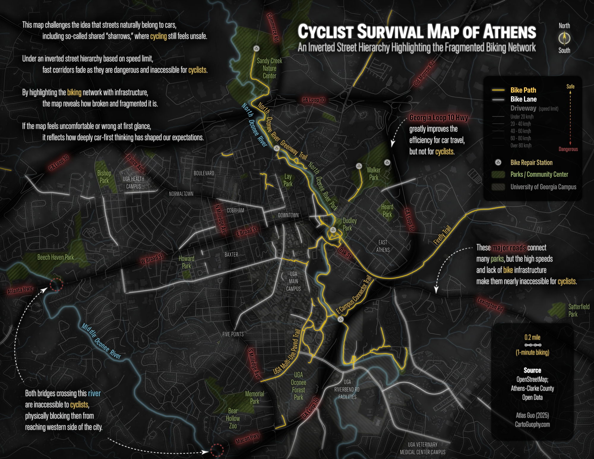

Cyclist Survival Map of Athens, GA
This map is designed for desktop viewing.
Please open it on a laptop or desktop computer for the full experience.

Athens, Georgia
Most maps are made for drivers. This one isn't.
What if roads were ranked by how safe they feel on a bike — not by how fast cars can move through them? This map flips the hierarchy, and the familiar becomes strange.
01 — Starting point
A conventional road map of Athens. Roads are ranked by traffic volume. Driveways dominate. Bike infrastructure is present but subdued — easy to miss and ignore.
This is how most people see the city.
02 — Inversion
Flip the hierarchy. Roads are now rendered by how safe they feel on a bike — quiet, low-traffic streets glow brightest. Major driveways recede into darkness.
The city rearranges itself.
03 — Major corridor
Broad Street is a vital east–west artery through Athens, connecting to Atlanta Highway in the west and continuing east toward Lexington Road.
Essential for crossing the city, yet relentlessly hostile to cyclists. Highlighted in red — a caution, not a route.
04 — River crossings
The Middle Oconee River bisects the west side of Athens. Of the bridges that cross it, most lack safe accommodations for cyclists — nearly no shoulder, no shared path, high-speed traffic.
Marked crossings are effectively inaccessible by bike.
05 — Green spaces
Athens has many parks and green spaces. Some are important nodes in the bicycle network, connecting trails, greenways, and quieter streets.
But many others remain difficult to reach by bike, isolated by busy roads, missing connections, and abrupt gaps in safe routes.
06 — Infrastructure
Strip away the car roads. What remains is Athens's dedicated cycling infrastructure — bike paths in gold, bike lanes in dashed lines.
Coverage is real but uneven. Large areas of the city remain without any dedicated coverage.
07 — Reading the map
Bright areas are where cyclists feel at home. Dark corridors are where they hold their breath. The contrast is not subtle — it is the everyday geography of risk.
Urban cycling infrastructure is not just about convenience. It is about who gets to move freely, and who does not.
08 — Comparison
Drag the divider to compare.
Same streets. Different stories.
09 — Static edition
This storymap is built on a print map completed during 30-Day Map Challenge in 2025. It's a static narrative designed for sharing and advocacy.
Download full map ↓{kind=link}